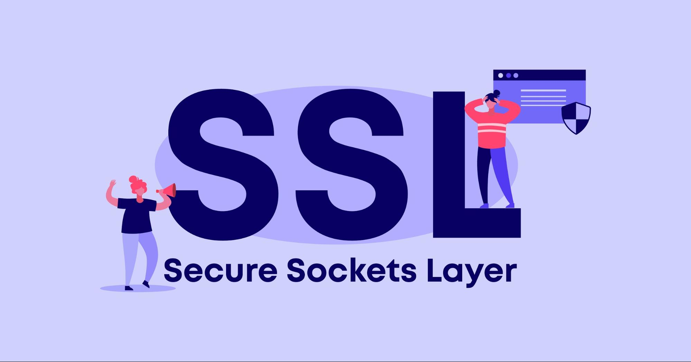

회사 서비스 SSL 등록
당시 회사서비스가 HTTPS가 아닌 HTTP로 서비스를 운영했습니다. 전체 프로젝트를 SSL 등록하라는 일을 맡게 되어 혼자 진행했던
작업 입니다.
CertBot 같은 오픈소스 SSL이 있지만, 수동갱신 해야 하는 이슈가 있어 COMODO 제품을 사용했습니다.
해당 작업을 하면서 큰 이슈는 SSL로 바꾸면서 프록시 서버 소스를 수정해야 했는데, HTTP PORT는 80이고 HTTPS는 443이기
때문입니다.
작업 결과와 과정을 문서로 만들어 개발팀들과 공유하는 자리로 끝난 작업입니다.
Technologies:
- - Apache
- - SSL
- - Comodo